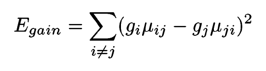

This paper describes a method to put together monocular images of stretches of roads taken from within a vehicle being driven on them. It does not make use of GPS and it is purely a vision algorithm. The method consists of multistage registration followed by some gain compensation and blending. The following assumptions are made about the environment:
The set of parameters required to completely model the geometry of the scene includes the following:
Prior knowledge helps in initializing the camera parameters and the road-to-camera coordinates transformation. Keyframes are selected to obtain a compact representation of the entire sequence of images available. The idea here is to select the minimum number of keyframes to ensure accurate registration (lot of correspondences between consecutive keyframes). Also, the keyframes should be more or less uniformly spread over time. From the selected keyframes, tracks (feature correspondences between consecutive keyframes) lying on the surface of the road (estimated using prior knowledge of road-to-camera transformation parameters) are selected for the registration process.
The only missing parameters to have a complete initial estimate of the geometry of the scene are the road-to-road transformation parameters (T_rr) between subsequent keyframes. These can be estimated by using the tracks selected from the previous section and obtaining a least-squares plane to plane mapping.
Given the initial estimate of the parameters, they need to be refined using a global optimization scheme. This can be achieved if highly accurate correspondences on the surface of the road between consecutive keyframes can be established. As a precursor to that, segmentation of the road needs to be performed in order to ensure that only features on the surface of the road are selected. The way the segmentation is done in this paper is by:
Now that somewhat accurate matches between keyframes are available, an iterative procedure to estimate the transform between the consecutive pairs of keyframes, using a RANSAC based scheme is performed.
The parameters are optimized by performing temporal integration via bundle adjustment.
Generate one base image per keyframe which contains all visible pixels warped to the road plane. Combine base images together by selecting pixels from the closest base image. Closest here refers to the euclidean distance from the camera center of the base image to the pixel’s global road position.
The camera gain might be different across multiple keyframes. To compensate, compute a gain vector g = [g_1, g_2, … ,g_n] (n - number of keyframes) that minimizes:
Where u_ij is the mean of the pixels in image I_i that overlap with pixels in image I_j.
Multi-band blending is done by blending low frequencies over larger spatial ranges and high frequencies over small spatial ranges. The output of this section is a visually appealing single mosaic image of the surface of the road, from a bird’s eye view.
This paper appears to be the only decent work in this area, and the method outlined seems fairly robust. Things that we could focus on are: